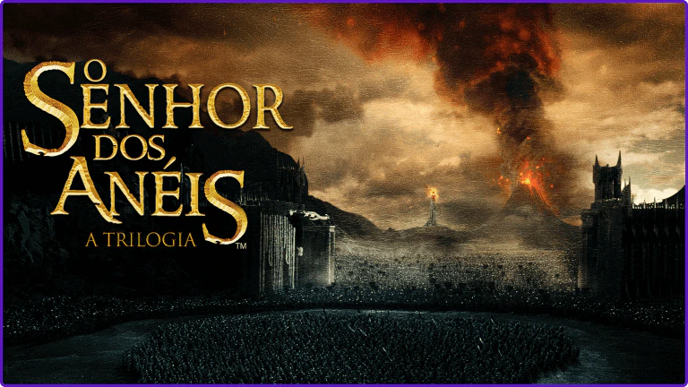
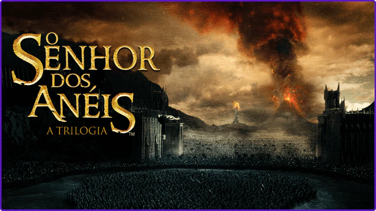

DÍSPONIVEL AGORA
Essa reunião tão esperada chega
com muita magia.
ECONOMIZE 5 MESES
COM O PLANO ANUAL*
ASSINE AGORA*termos se aplican.
PREPARE-SE PARA FEITIÇOS, MAGIA E EMOÇÕES
O tempo passou, e a saga do menino que viveu para enfrentar Lord Voldemort completou 20 anos! E pra comemorar em grande estilo, nada melhor do que reunir todo o elenco. Participe desse reencontro mágico, e reviva a história que marcou toda uma geração.


 
